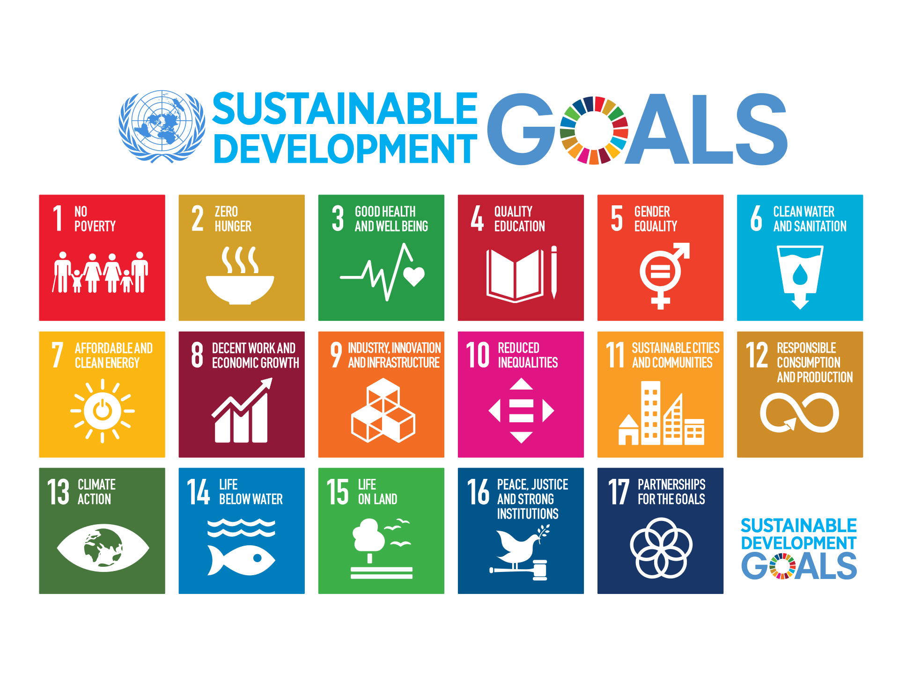
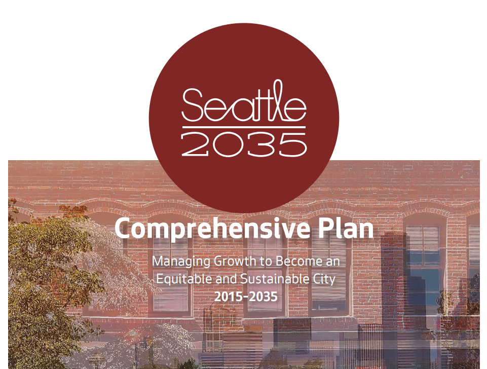
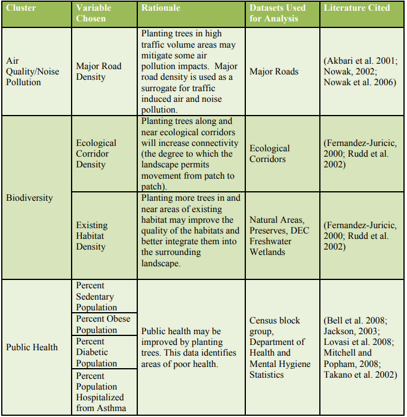
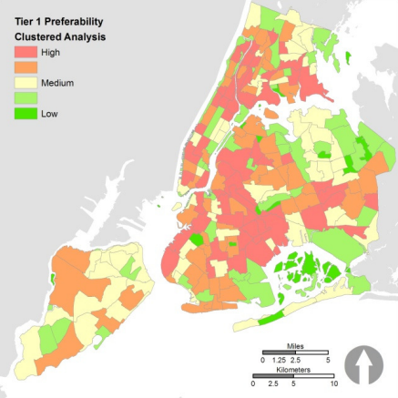
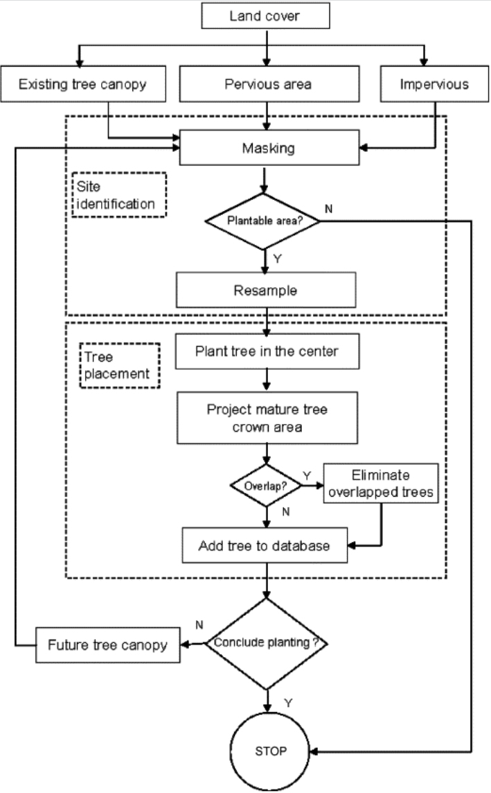
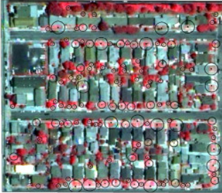

4 Week4 Policy
4.1 Summary
City: Seattle, US
Seattle is a vibrant and lively city on the west coast of the US. The city has 4 million people in the metropolitan area. It is one of the fastest-growing large cities, which is home to many renowned companies, including Amazon, Microsoft, Boeing, and Starbucks. Also, the city has diverse cultures, beautiful landscape, great outdoor recreation, and environmental stewardship. Therefore, it has strong cultural and job attractions for the surrounding areas. There are more than four thousand new settlers each year. This requires the city of Seattle to have a better understanding and planning of the city.
Global Policy
Sustainable development goals (SGDs) were formulated in 2015 by the United Nations General Assembly (UNGA), which aims to provide a future development framework. It includes 17 goals that emphasize in the sustainability of social, environment, and economic aspects.
Target 11.7 By 2030, provide universal access to safe, inclusive and accessible, green and public spaces, in particular for women and children, older persons and persons with disabilities.
Metropolitan policy
The city of Seattle has a comprehensive plan (2015-2035) in order to become an equitable and sustainable city. The core values of Seattle include, race and social equality, environmental stewardship, community, economic opportunity and security.

Goal
ENG1: Foster healthy trees, vegetation, and soils to improve human health, provide wildlife habitats, improve drainage, give residents across the city access to nature, provide fresh food, and increase the quality of life for all Seattleites.
Policies
EN 1.1: Seek to achieve an urban forest that contains a thriving and sustainable mix of tree species and ages, and that creates a contiguous and healthy ecosystem that is valued and cared for by the City and all Seattleites as an essential environmental, economic, and community asset.
EN 1.2: Strive to increase citywide tree canopy coverage to 30 percent by 2037 and to 40 percent over time.
EN 1.3: Use trees, vegetation, green stormwater infrastructure, amended soil, green roofs, and other low-impact development features to meet drainage needs and reduce the impacts of development.
These three policies and goals mainly aim to improve the urban forest in Seattle. The urban forest is make up of all individual trees, street trees, green spaces with trees, and associated vegetation in the urban area. Basically, the policies and goals requires city of Seattle have a better management, interpreation, and monitoring of their urban forest.
4.2 Application
The goals and policies in the Seattle plan don’t provide the detailed solutions that contribute to achieve them. In order to improve tree canopy cover in Seattle, I think two steps are necessary, and they should be detailed.
explore the neighborhoods with a high preferablity of planting tree
identify the potential planting site in areas with a high priority of tree planting
In this application, I tries to review some literature and generate some detailed solutions for increasing canopy cover and urban forest, which contribute and support to the health and sustainability of the natural environment in Seattle.
Neighborhood level: Preferable locations analysis of urban tree planting
The study conducted by Locke et al. (2010) analyzed the preferable locations of urban tree planting in New York City, they narrowed the preferable locations to the neighborhood levels. Although the data they used is not remote sensing data, the method of identifying the preferable locations of urban trees are also useful for Seattle. They used need-based criteria for preferability analysis. For example, when some neighborhood with a higher temperature in summer, it would be a high priority area for planting a tree.

They combined many variables together, and assigned the different weights based on the importance of variables. Finally, they produced a map that shows neighborhoods with different priority for planting trees.

Individual tree level: the potential planting sites analysis
This study conducted by Wu, Xiao, and McPherson (2008) developed a computer program, which virtually planted three types of trees(small, medium, and large trees) in Los Angeles by using satellite data. It can iterativelly find the potential planting areas, and this would be really useful for planting department in every city. The planting department can combine the virtually planting sites with the real site conditions to plant a new tree for city.
data
source：QuickBird satellite
spatial resolution: 2.4m
bands: blue, green, red, near-infrared , and a panchromatic band with 60cm
temporal resolution: 64 scenes collected from 2002 to 2005
Method
The computer program iterativelly search all the potential planting site, and it will avoid areas that are not suitable to plant trees, like sites too close to the buildings, pavings and so on.

Output
The circles are potential planted trees, and the size of circles stands for small, medium, and large trees in the neiborhood.

4.3 Reflection
I think I need to always consider the policies and goals in the application of remote sensing data. The remote sensing data are not only limited in doing research, but also contributed to the development of cities. This will provide a positive loop in both remote sensing development and city development. Also, the policy about increasing green canopy is proposed by many cities, and this would be a great research direction for me.
The policies not only have limitations on how to achieve the policies, but also they should provide some detailed guides about tree and vegetation species for citizens. This will engage more citizens to join the planting work, and they may plant more trees in their gardens. It also can avoid some potential risks in the tree planting process. There are many invasive plants in North America, people usually have a high possibility to plant a wrong plant that causes plant invasion.
The two cases in the application part only considered the new planting trees. The management and monitoring of existing trees also essential for the achivment of goals and policies. For example, some LiDAR data can be used to detect the height of trees, and also monitoring the tree health. Unhealthy trees can be treated or replaced.
The financial part of the implementation of the solution is not considered, and it’s also important for the city of Seattle. The cost of this solution may cause by acquisition of remote sensing data, the implementation of planting trees including planting workers, the costs of nursery trees, and maintenance fees.